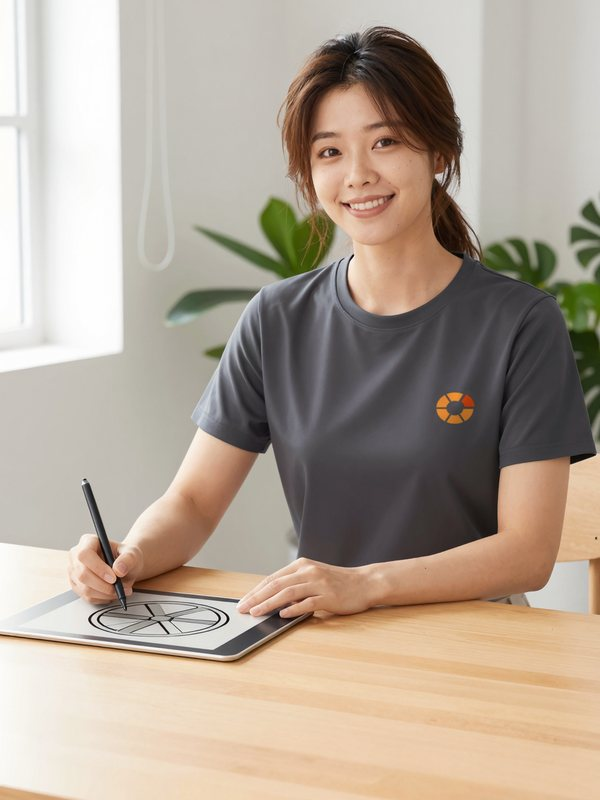
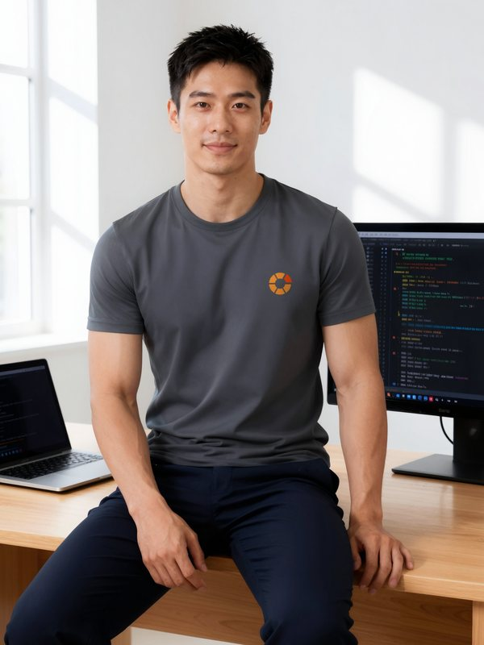
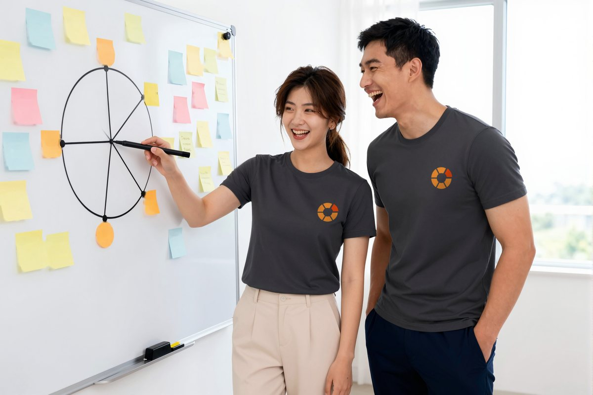
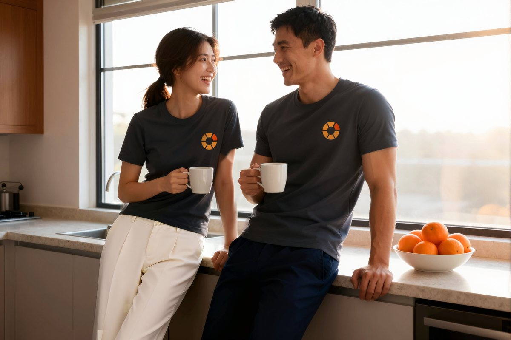

Made by two.
Orange is a small team started by two people: Stella, a designer, and Robin, a developer. We build a tool for people who drag files around hundreds of times a day, so that one key mid-drag is all it takes.

Stella
Co-founder, Design
Stella draws the wheel and the way it moves. The six-segment wheel, the three themes, the app icon and every Settings pane start on her desk. She likes screens that let people think less, and she collects photos of orange cross-sections.

Robin
Co-founder, Engineering
Robin builds everything from the engine that notices a drag to image, audio and video conversion, signing and releases. He keeps the promise that the original is never touched, and he is happiest when every test is green.
How we work
- Drag, tap, drop. Before adding a feature, we look for a step to remove.
- Files stay on your Mac. Every conversion and edit runs on this Mac.
- The original stays. Results always go next to it as new files, and only after we check them again.
- We use it before we ship it. Every Friday, each of us tries the other's week of work on our own Mac.
- Small and often. One thing that works today beats a big promise.
- Two people, quick calls. Decisions happen the same day; when we disagree, the easier path for people using Orange wins.
Working together


With a team of two, one message reaches us. Tell us what gets in your way on GitHub at orange-releases.
Stella and Robin are fictional characters created to introduce the Orange team; their photos are AI-generated.